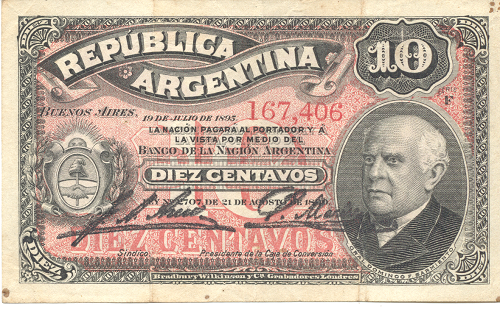
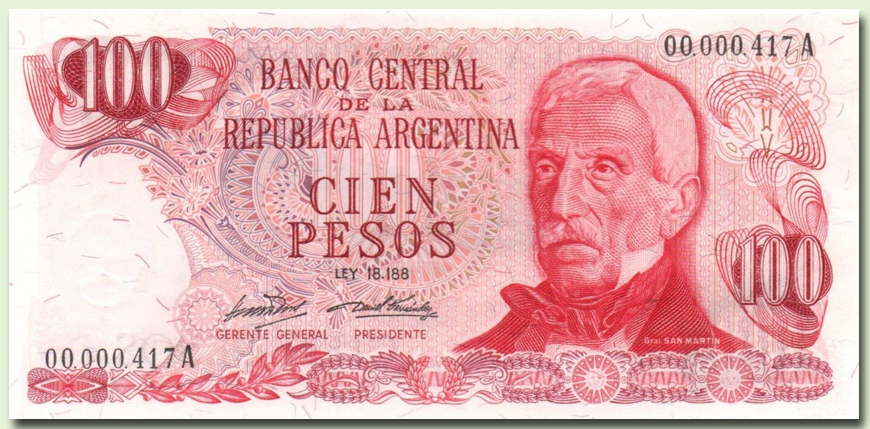
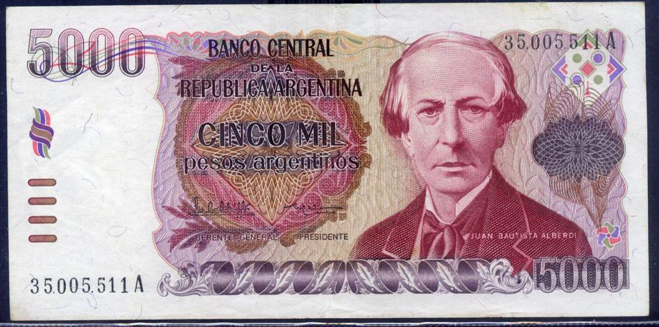
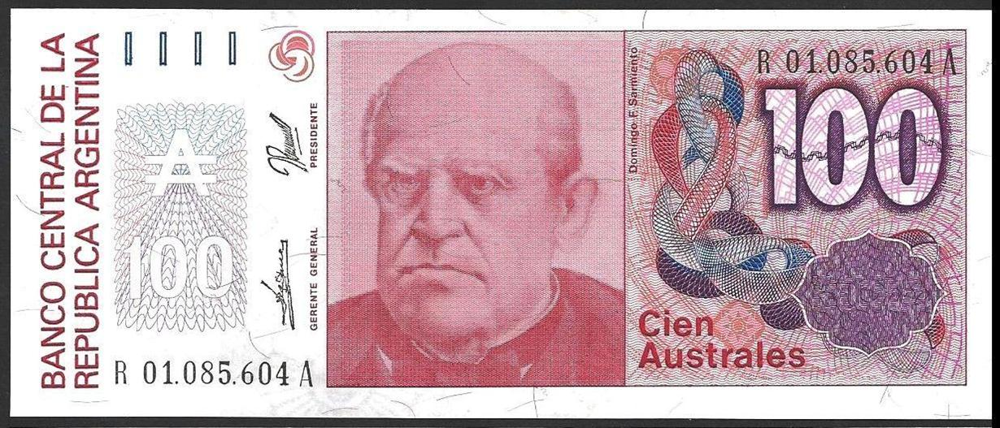

Pesos Moneda Nacional (1881 - 1969)El Peso Moneda Nacional (símbolo: m$n, ISO 4217: ARM) fue el papel moneda vigente en la Argentina en el período 1881-1969.
Fue creado mediante la Ley 1.130, sancionada el 5 de noviembre de 1881 con el objetivo de unificar el sistema monetario en el país, que hasta ese entonces había sido bastante caótico debido a la variedad de tipos de moneda: pesos moneda corriente, Peso Fuerte y la libre circulación de monedas extranjeras.
Esta ley determinó la unidad monetaria de la Argentina a través del peso oro y plata y dispuso que los bancos de emisión debían renovar toda su emisión de billetes a moneda nacional.
Los antiguos billetes se podían cambiar a la nueva moneda a razón de $m/c 25 = m$n 1.

Pesos Ley 18.188 (1970 - 1983)
El Peso Ley 18 188 (Símbolo: $, ISO 4217: ARL) fue la moneda vigente en la Argentina en el período 1970-1983, popularmente conocida como peso ley.
Cada peso ley equivalía a 100 pesos moneda nacional y a 2500 pesos moneda corriente.
El cambio fue decidido a causa de que las cantidades usuales de dinero que se manejaban no entraban en las máquinas de calcular de la época.
El peso ley, que entró en circulación como tal en 1970, sufrió una elevada inflación, sobre todo a partir de 1975, y en 1981.
En ese año se llegó a emitir un billete de $ 1 000 000.
En 1983 se reemplazó por una nueva unidad: el Peso Argentino que tenía una equivalencia de 10 000 pesos ley por 1 peso argentino.

Peso Argentino (1970 - 1983)
El peso argentino fue creado mediante la Ley 22.707 del 6 de enero de 1983, y reemplazó al peso Ley 18.188.
Cada peso argentino equivalía a 10 000 pesos Ley 18.188, y a diferencia del anterior cambio de moneda no hubo resellado de billetes.
La inflación en el período 1983-1985 siguió en ascenso y en 1985 el peso argentino fue reemplazado por una nueva moneda, el austral.
Cuando el austral reemplazó al peso argentino, cada austral era equivalente a 1000 pesos argentinos.

Australes (1985 - 1991)
El austral fue la moneda de curso legal de la República Argentina desde el 15 de junio de 1985 hasta el 31 de diciembre de 1991, cuando se transicionó al peso convertible.
Su símbolo era una A con el detalle de que la línea horizontal era doble (₳, U+20B3 ₳ ).